Aufgabestellung:
1. Einfache Schwingungsformen: Zunächst brauchen wir nur die oben beschriebenen
Module. Wir schauen uns die Wellenformen der Grundklänge des Oszillators an
(Sägezahn, Rechteck, etc.). Wir können nun Beispiele der einzelnen Klänge durch
Drücken einer Taste spielen und mit dem Recorder aufzeichnen. Wie man das RecorderPlugin aktiviert,
zeige ich im Übungstermin! Man benötigt dafür einen (kostenfreien)
VCVRack-Account.
2. Außerdem lässt sich in Praat das Spektrum anzeigen (Wave einlesen, To Spectrum…,
Edit). Es erscheint eine Liniendarstellung des Amplitudenspektrums mit dB-Angaben. Aus
diesen können wir dann lineare Prozentwerte mit Bezug auf die Grundschwingung
berechnen. Wir setzen dazu die Amplitude der Grundschwingung mit 0 dB entsprechend
100 % an. Bei der Square-Welle variieren wir die Pulsweite, d.h. das zeitliche Verhältnis
zwischen positivem und negativem Schwingungsteil, mit dem Regler P-WIDTH am
Oszillator) und beobachten, wie sich das Verhältnis der Obertöne verändert. Dazu
betrachten wir drei Fälle: 50/50, 30/70 und 10/90 zwischen positivem und negativem Teil,
ablesbar am Oszilloskop.
(Ins Ergebnisprotokoll: Bilder der Spektren für drei markante P-Width-Einstellungen beim
Rechteck, ein Sägezahn, ein Dreieck, Ausschnitte aus den wavs, Angaben der
Frequenzen und Amplituden in dB und Prozentwerten für die Grundschwingung und die
ersten drei Obertöne, bei denen die Amplitude größer 0 ist).
Lösung:
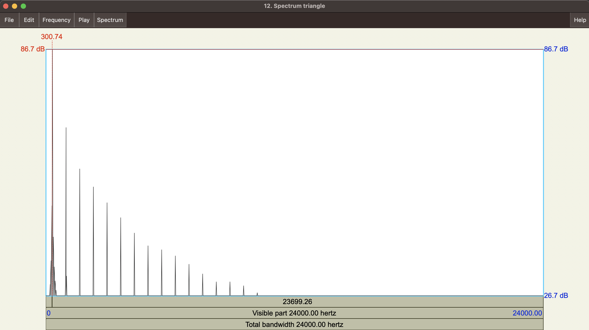
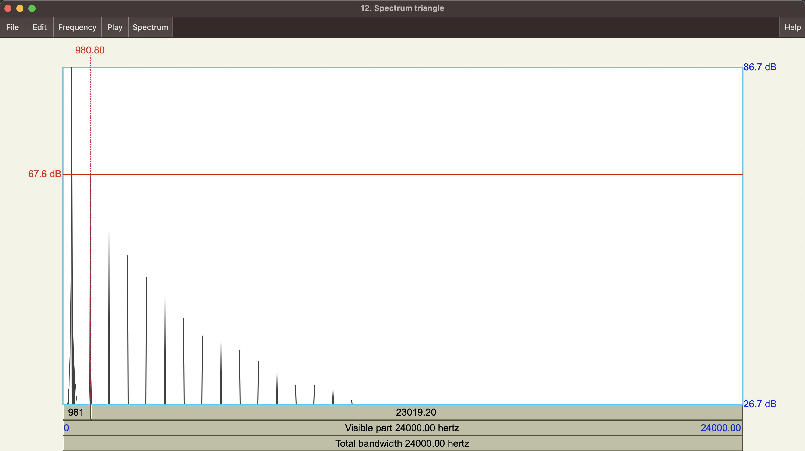
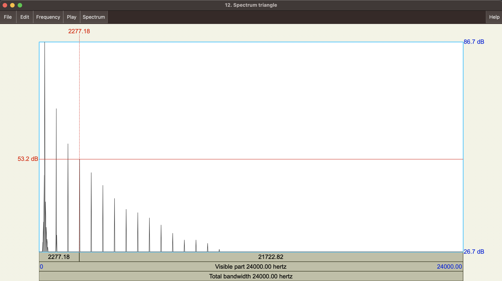
| Ton |
Frequenz (Hz) |
Amplitude (dB) |
Differenz (zum Grundton in dB) |
% |
| Grundton |
300 Hz |
86.7 dB |
0.0 dB |
100 % |
| Unterton 1 |
980 Hz |
67.6 dB |
-19.1 dB |
11.09% |
| Unterton 2 |
1639 Hz |
57.5 dB |
-29.2 dB |
3.46% |
| Unterton 3 |
2277 Hz |
53.2 dB |
-33.5 dB |
2.113% |
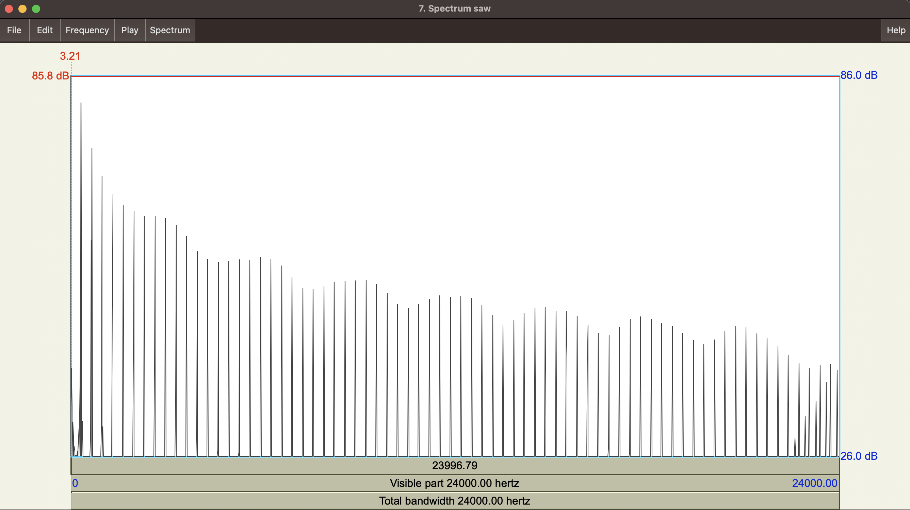
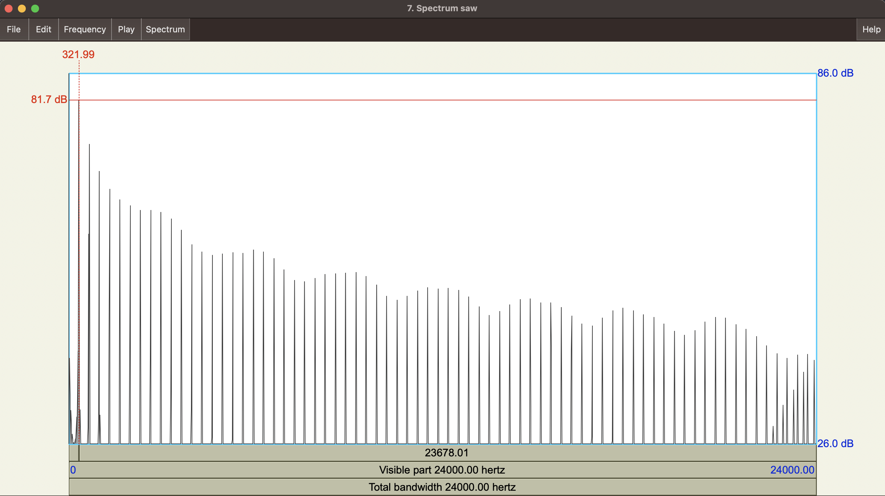
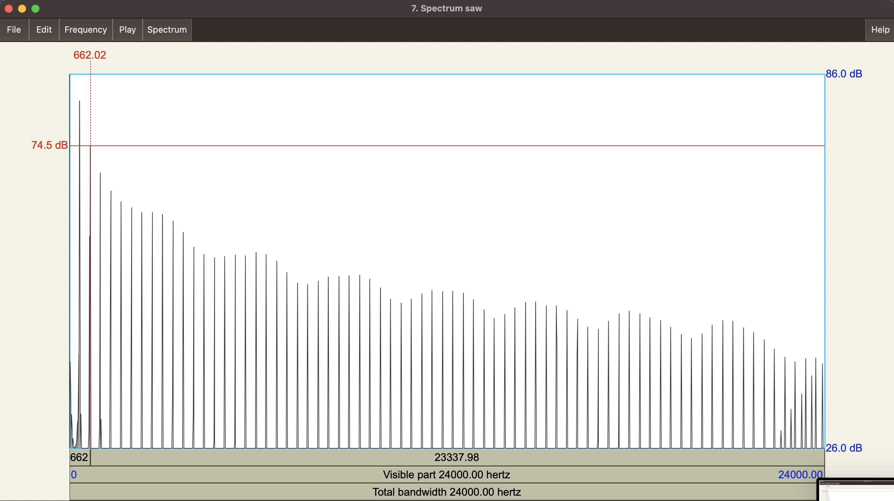
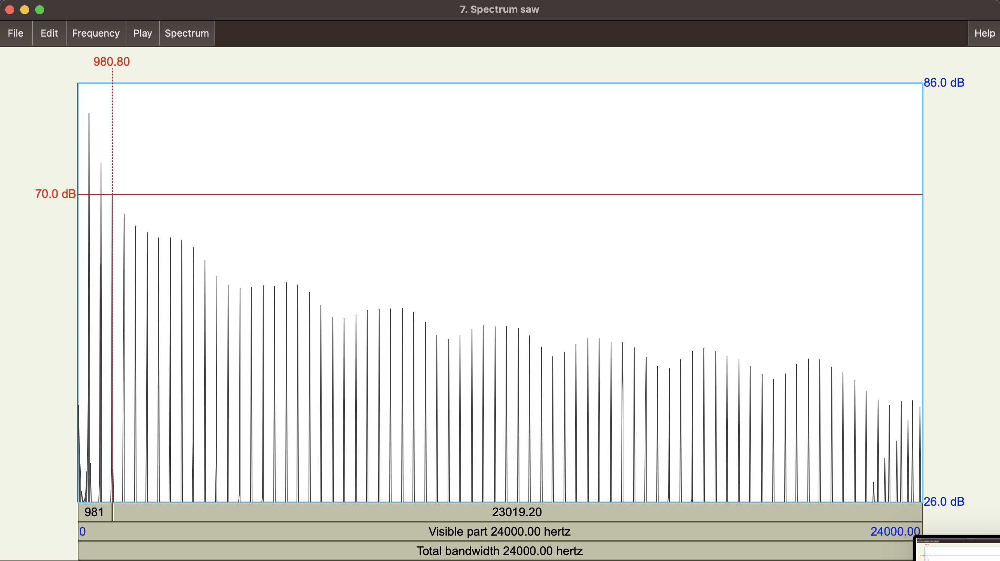
| Ton |
Frequenz (Hz) |
Amplitude (dB) |
Differenz (zum Grundton in dB) |
% |
| Grundton |
3.2 Hz |
85.8 dB |
0.0 dB |
100 % |
| Unterton 1 |
322 Hz |
81.7 dB |
-4.1 dB |
62.37% |
| Unterton 2 |
662 Hz |
74.5 dB |
-11.3 dB |
27.22% |
| Unterton 3 |
980 Hz |
70.0 dB |
-15.8 dB |
16.21% |
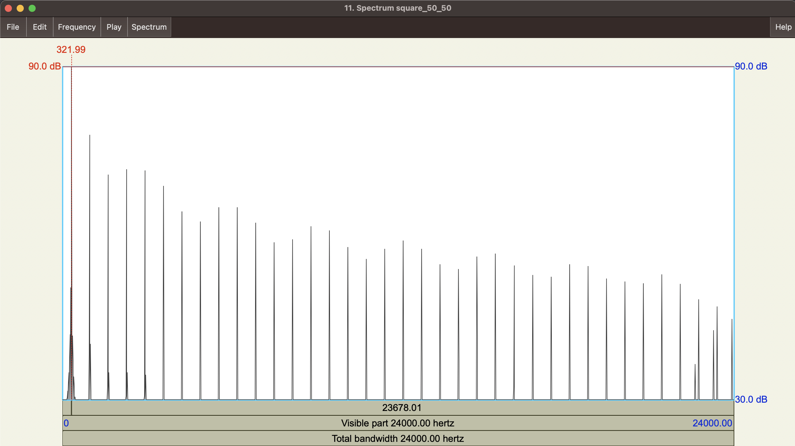
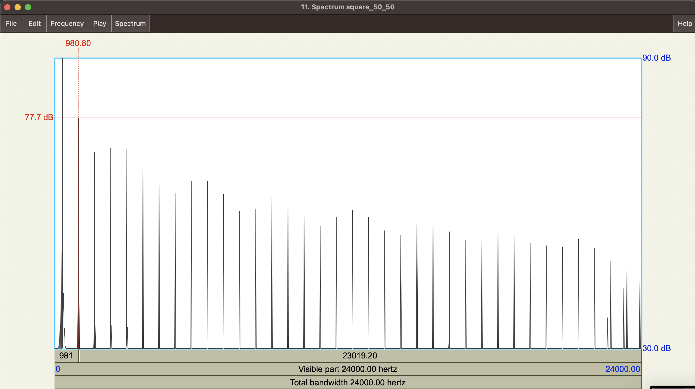
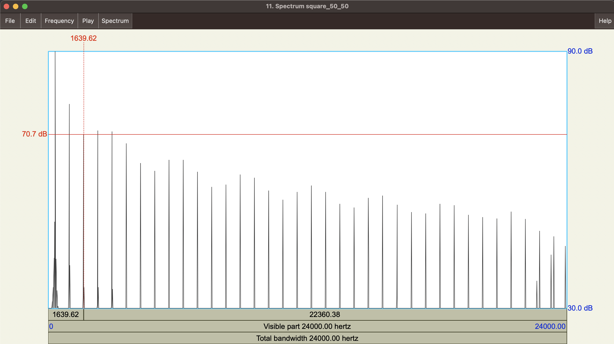
| Ton |
Frequenz (Hz) |
Amplitude (dB) |
Differenz (zum Grundton in dB) |
% |
| Grundton |
322 Hz |
90.0 dB |
0.0 dB |
100 % |
| Unterton 1 |
981 Hz |
77.7 dB |
-12.3 dB |
24.26% |
| Unterton 2 |
1640 Hz |
70.7 dB |
-19.3 dB |
10.83% |
| Unterton 3 |
2298 Hz |
71.5 dB |
-18.5 dB |
11.88% |
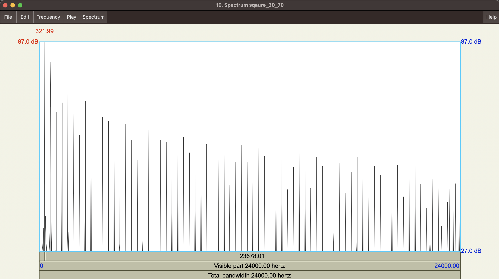
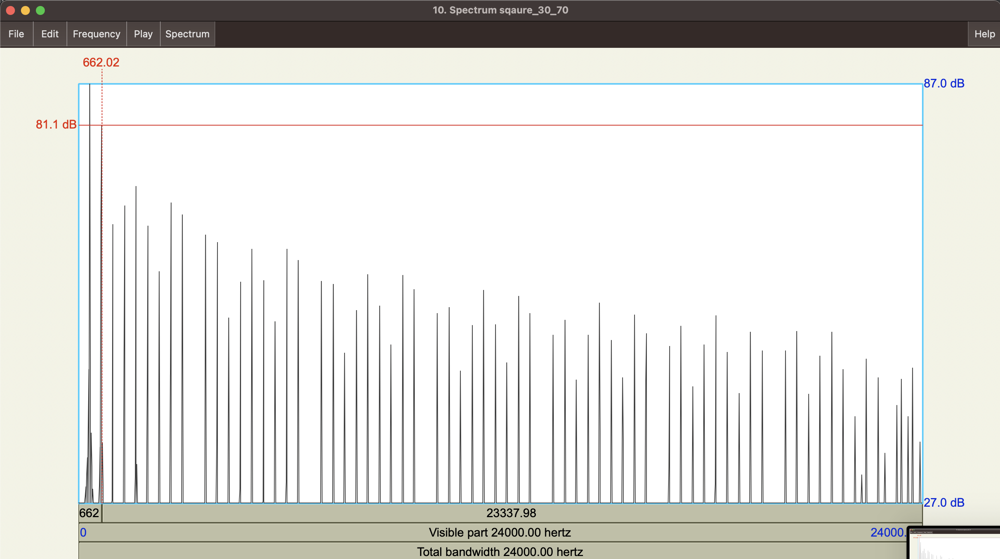
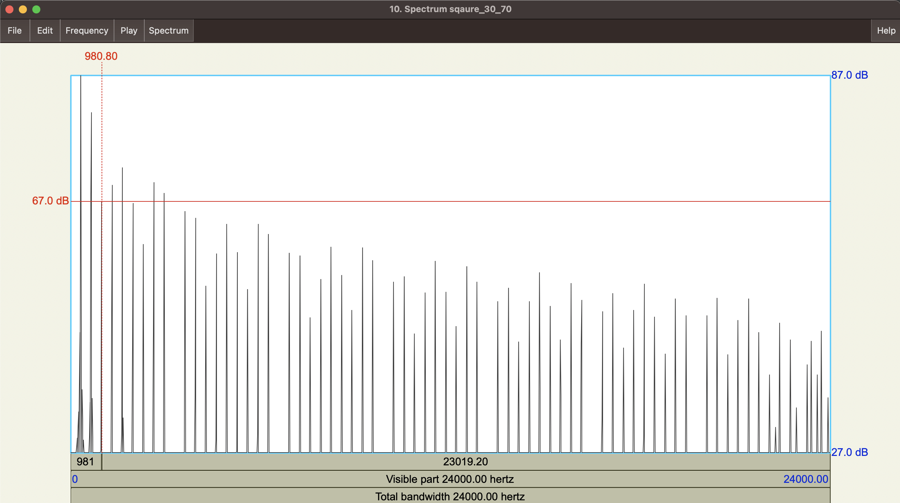
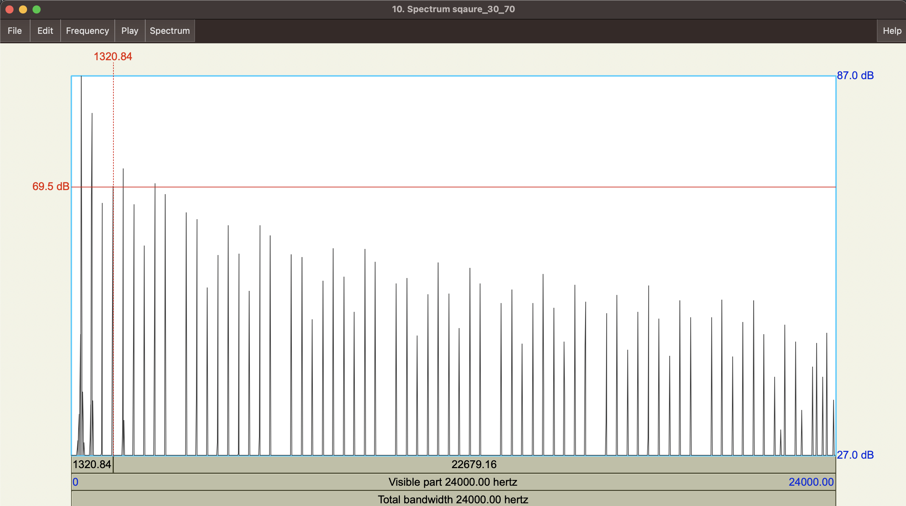
| Ton |
Frequenz (Hz) |
Amplitude (dB) |
Differenz (zum Grundton in dB) |
% |
| Grundton |
322 Hz |
87.0 dB |
0.0 dB |
100 % |
| Unterton 1 |
662 Hz |
81.1 dB |
-5.9 dB |
50.69% |
| Unterton 2 |
981 Hz |
67.0 dB |
-20 dB |
10% |
| Unterton 3 |
1321 Hz |
69.5 dB |
-17.5 dB |
13.33% |
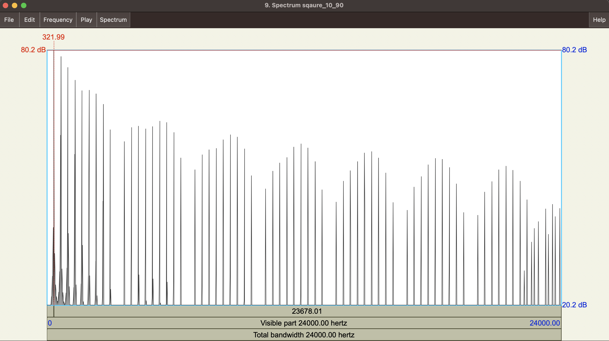
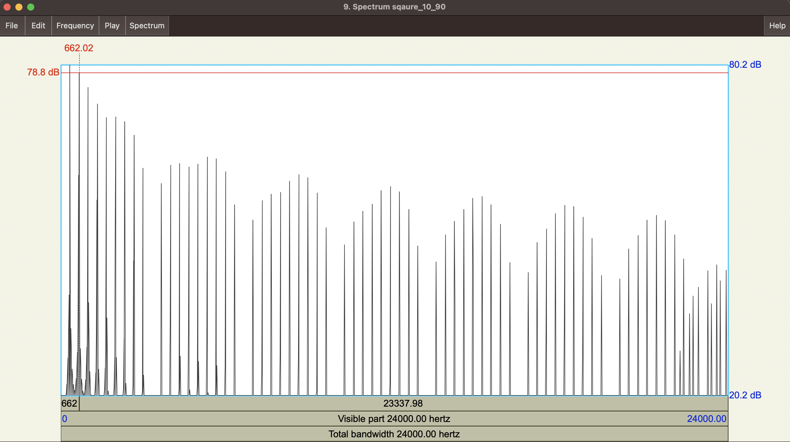
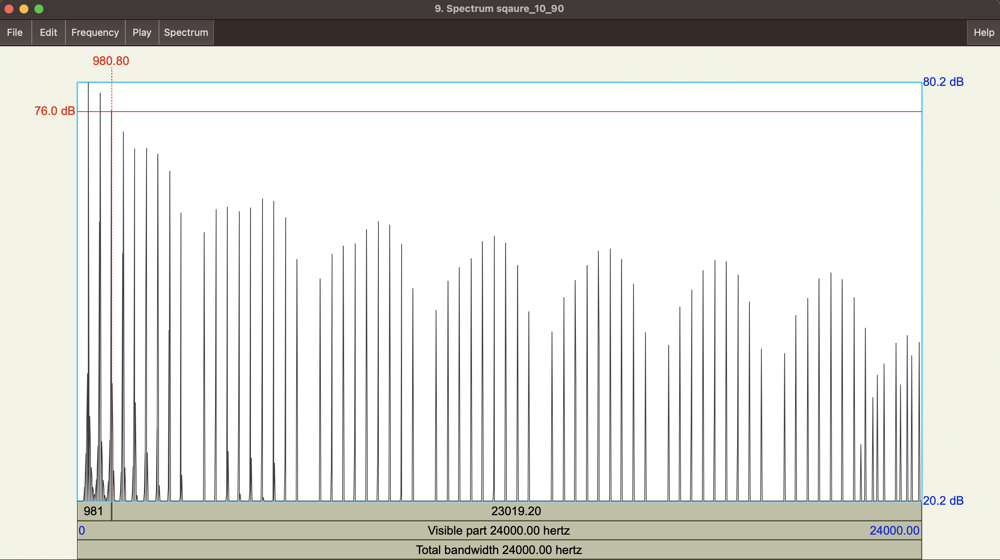
| Ton |
Frequenz (Hz) |
Amplitude (dB) |
Differenz (zum Grundton in dB) |
% |
| Grundton |
322 Hz |
80.2 dB |
0.0 dB |
100 % |
| Unterton 1 |
662 Hz |
78.8 dB |
-1.4 dB |
85.11% |
| Unterton 2 |
981 Hz |
76.0 dB |
-4.2 dB |
61.65% |
| Unterton 3 |
1300 Hz |
73.0 dB |
-7.2 dB |
43.65% |